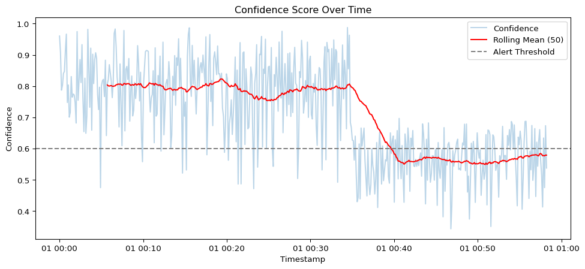
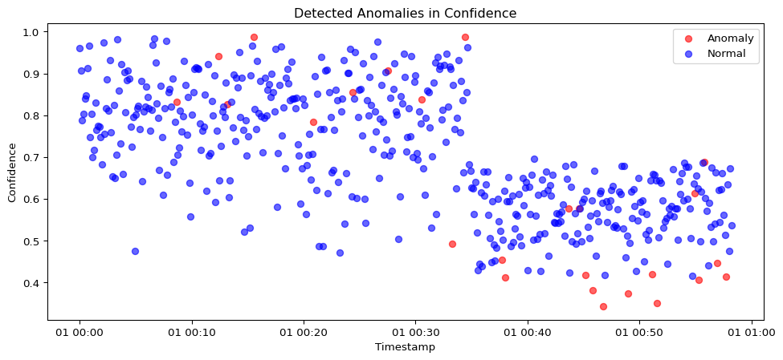

Code
import pandas as pd
import numpy as np
import matplotlib.pyplot as plt
from sklearn.ensemble import IsolationForestAtila Madai
June 22, 2025
This notebook provides a robust framework for performing quality assurance (QA) on annotated image datasets used in computer vision (CV) pipelines for airport apron operations. These operations involve detecting and tracking aircraft, vehicles, ground crew, and equipment to ensure timely and safe turnaround processes. Reliable annotation is critical in such safety-critical environments, where every mislabeled object or faulty bounding box can undermine model accuracy and operational trust.
We focus on a synthetic dataset representing apron scenarios, using per-frame CSV annotations. The QA framework evaluates the correctness of bounding boxes, label consistency, and visual alignment before converting the data into the COCO format—a widely used standard for training object detection models.
pandas): Structured loading of annotation filesThe dataset includes synthetic images of airport apron scenes and CSV annotation files with the following structure:
frame_id: Frame number or timestampobject_id: Unique identifier per objectobject_type: Class label (e.g., ‘aircraft’, ‘baggage_cart’, ‘person’)x_min, y_min, x_max, y_max: Bounding box coordinatesflowchart TD
A[Load Annotation CSVs] --> B[QA Sanity Checks]
B --> C[Bounding Box Visual Overlay]
C --> D[Convert to COCO Format]
D --> E[Schema Re-validation]
E --> F[Export QA-Ready Dataset]At the end of this notebook, we will have: - Validated bounding box annotations - Visual verification of object labeling - Exported a clean, COCO-compatible dataset
This workflow provides a reliable, repeatable QA process that can be adapted to other CV use cases in airside, industrial, or transportation domains.
This notebook simulates quality assurance logic for real-time CV pipelines, focusing on monitoring inference confidence, detecting model drift, applying anomaly detection techniques, and tracking experiments using MLflow.
| timestamp | bbox_area | confidence | class | |
|---|---|---|---|---|
| 0 | 2025-01-01 00:00:00 | 2149.014246 | 0.960352 | pushback |
| 1 | 2025-01-01 00:00:07 | 1958.520710 | 0.906746 | boarding |
| 2 | 2025-01-01 00:00:14 | 2194.306561 | 0.787079 | boarding |
| 3 | 2025-01-01 00:00:21 | 2456.908957 | 0.802327 | refuelling |
| 4 | 2025-01-01 00:00:28 | 1929.753988 | 0.840601 | boarding |
Visualize the rolling confidence mean to detect potential drift.
rolling_avg = data['confidence'].rolling(50).mean()
plt.figure(figsize=(12, 5))
plt.plot(data['timestamp'], data['confidence'], alpha=0.3, label='Confidence')
plt.plot(data['timestamp'], rolling_avg, color='red', label='Rolling Mean (50)')
plt.axhline(0.6, linestyle='--', color='gray', label='Alert Threshold')
plt.legend()
plt.title('Confidence Score Over Time')
plt.xlabel('Timestamp')
plt.ylabel('Confidence')
plt.show()
anomaly
Normal 475
Anomaly 25
Name: count, dtype: int64plt.figure(figsize=(12, 5))
colors = {'Normal': 'blue', 'Anomaly': 'red'}
for label, group in data.groupby('anomaly'):
plt.scatter(group['timestamp'], group['confidence'], c=colors[label], label=label, alpha=0.6)
plt.title('Detected Anomalies in Confidence')
plt.xlabel('Timestamp')
plt.ylabel('Confidence')
plt.legend()
plt.show()
Log model parameters, performance metrics, and version metadata using MLflow.
import mlflow
import mlflow.sklearn
# Start an MLflow run
with mlflow.start_run(run_name="cv_qa_drift_monitoring"):
mlflow.log_param("model_type", "IsolationForest")
mlflow.log_param("contamination", 0.05)
mlflow.log_metric("anomaly_count", (data['anomaly'] == "Anomaly").sum())
mlflow.log_metric("mean_confidence", data['confidence'].mean())
mlflow.log_metric("rolling_avg_last", rolling_avg.iloc[-1])
mlflow.sklearn.log_model(model, "model")
mlflow.set_tag("version", "v1.0")
mlflow.set_tag("context", "QA pipeline drift detection")
print("✅ MLflow run logged.")2025/06/22 20:25:38 WARNING mlflow.models.model: `artifact_path` is deprecated. Please use `name` instead.
2025/06/22 20:25:52 WARNING mlflow.models.model: Model logged without a signature and input example. Please set `input_example` parameter when logging the model to auto infer the model signature.✅ MLflow run logged.kubectl Logs for ML System MonitoringReal-time ML pipelines are often deployed in Kubernetes pods. QA engineers frequently inspect pod logs and system status using kubectl. Below is a simulated log parser that mimics reading pod health and anomaly alerts from a log file.
import time
# Simulated kubectl logs (mocked string output)
kubectl_logs = """
[2025-06-20 08:01:13] pod/vision-inferencer Ready
[2025-06-20 08:01:19] INFO: Inference pipeline started.
[2025-06-20 08:01:22] WARN: Confidence dropped below 0.65
[2025-06-20 08:01:25] ALERT: Detected anomaly cluster in frame stream 41
[2025-06-20 08:01:30] pod/vision-inferencer Healthy
"""
# Display line-by-line to mimic real-time stream
for line in kubectl_logs.strip().split('\n'):
print(line)
time.sleep(0.3)[2025-06-20 08:01:13] pod/vision-inferencer Ready
[2025-06-20 08:01:19] INFO: Inference pipeline started.
[2025-06-20 08:01:22] WARN: Confidence dropped below 0.65
[2025-06-20 08:01:25] ALERT: Detected anomaly cluster in frame stream 41
[2025-06-20 08:01:30] pod/vision-inferencer Healthy